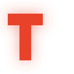
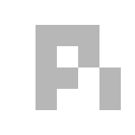
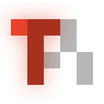
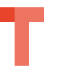

Red T, solid. Pi in pure black at 28 %, straight on top. Two colours, one grid.
120 × 120, mark touches left and right. Favicon, tab, inline.
144 × 144, 12 px margin = 8.3 %. App icon, dock, avatar.
One file cannot do both. A favicon with 8 % margin burns 8 % of 16 px on nothing and the blocks go soft; an app icon that touches the edge has its corners clipped by whatever mask the platform applies — iOS and macOS cut about 12 %, Android adaptive icons more.



就是两张图叠起来：turnpi-t.svg 在下，turnpi-pi.svg 在上。
平涂时幽灵只是一块「稍微暗一点的红」，读不出层次；底下有光之后，幽灵吸收的是光，
被盖住的地方变暗，Pi 的轮廓就成了打在光上的一道阴影 —— 这才是「盖在上面」。
发光用原生 feDropShadow 链式三遍（半径 1.5 / 4 / 7），不是 CSS box-shadow（那只作用于 HTML 盒子）。
平涂时，幽灵只是一块「稍微暗一点的红」，读不出层次。加了光之后，幽灵吸收的是光， 被盖住的地方变暗，Pi 的轮廓就变成了一道阴影 —— 这才是「盖在上面」的观感。 发光只存在于滤镜里，像素格子没有变，所以还是同一个标记，只是被点亮了。
| 层 | 面积 | 说明 |
|---|---|---|
| 红 T 未被覆盖 | 约 10 % | 只有 c0/r0 那一格 —— 唯一纯红的地方 |
| 红 T 被黑 Pi 覆盖 | 约 90 % | 横梁和竖笔都被压成 #A7301F |
| 光晕（T 外围） | — | 盖不到，是"被照亮"的唯一证据 |
所以这个标记真正在表达"光"的，不是 T 本身，而是溢在外面的那圈光晕。 主色越亮，光晕越站得住；纯红亮度低，光晕一暗，整张图就塌成一块砖红。 这就是为什么这里用暖红而不是正红 —— 不是审美，是让覆盖关系看得见。
48 px 以下光晕会糊掉字块，所以 favicon 仍然用平涂版（turnpi-icon.svg）。
发光版用于启动画面、README 首图、社交预览这类大尺寸场合。

Black on a dark ground is invisible, so the dark variant flips the ghost to white at 26 % — black stains the paper, white lifts the ink.
| Cell | Layers | Light ground | Dark ground |
|---|---|---|---|
| c0/r0 — left arm | red only | #E8432B | #E8432B |
| c1–c2/r0 — crossbar | red + ghost | #A7301F | #EE7462 |
| c1/r1–r3 — stem | red + ghost | #A7301F | #EE7462 |
| c3/r0–r1, c2/r2, c4/r2–r3 | ghost only | #B8B8B8 | #535457 |
c0/r0 is the only cell with nothing over it — that single pure-red block keeps the T
readable while Pi sits on top of everything else.
Current is #E8432B — hue 7.6°, an orange-red pulled back toward red.
Why not pure red: the ghost covers about 90 % of the T's area, so what you actually see of the
T is the covered colour, and the glow only survives in the halo outside. Pure red
(hue 358°) has less luminance, so that surviving halo goes dim and the composite flattens; a
slightly orange red keeps the light bright enough that the cover still reads as a shadow on it.
Ghost opacity held at 28 % across the row.